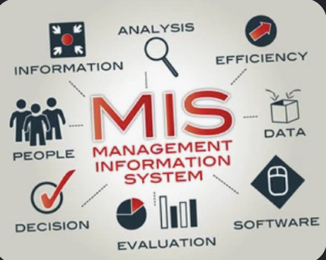

MIS & AI EthicsWebsite OverviewLaikyn RichOctober 17, 2026 Management Information Systems (MIS) are becoming more and more relevant in today's business industry. MIS combines a variety of aspects that help any business operate effectively. These include people, information, data, etc. These systems allow managers to steer away from gut decisions and ones based on data. By organizing this information, businesses can improve communication and effectiveness of their daily operations. Artificial Intelligence is becoming more common in MIS because it gives people the opportunity to speed up processes and identify issues. Understanding these tools will give people the opportunity to witness how technology affects businesses in today's society. Management Information Systems (MIS) are becoming increasingly relevant in today's business industry. MIS combines different elements that help businesses operate effectively. These elements include people, information, and data. These systems allow managers to move away from gut feelings and make decisions based on data instead. By organizing information, businesses can improve communication and the effectiveness of their daily operations. Artificial Intelligence is becoming more common in MIS because it helps speed up processes and identify potential issues. Understanding these tools helps people recognize how technology affects businesses in today's society. MIS Topic Overview
|